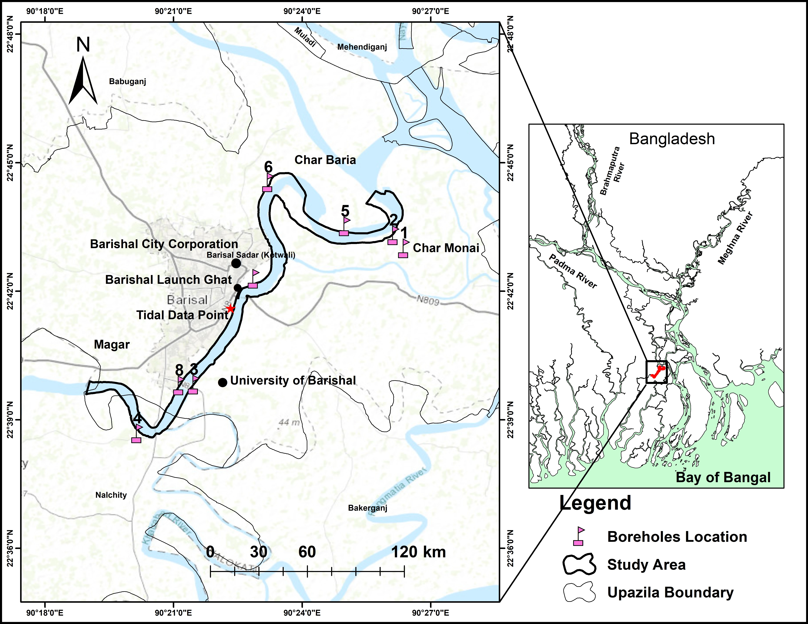
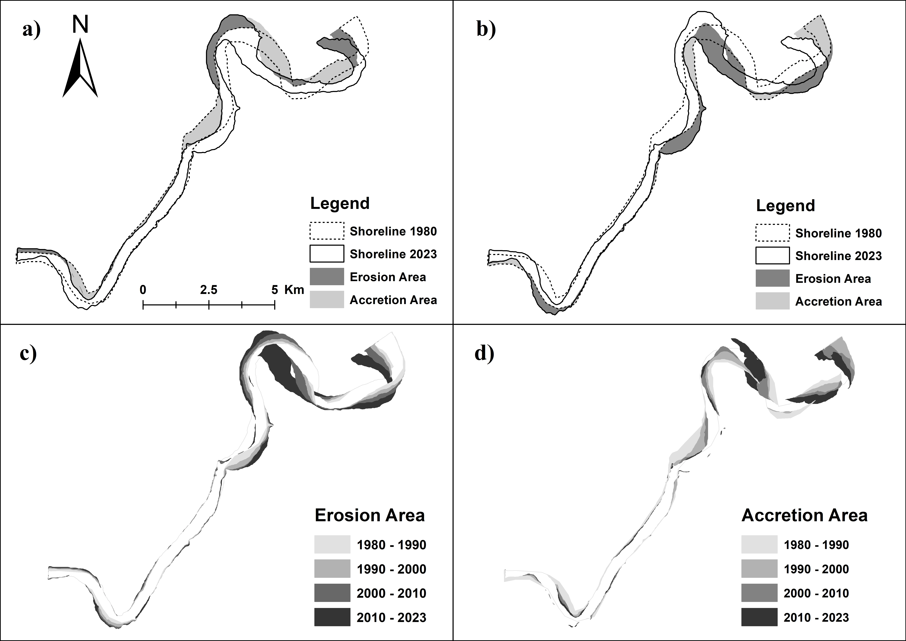
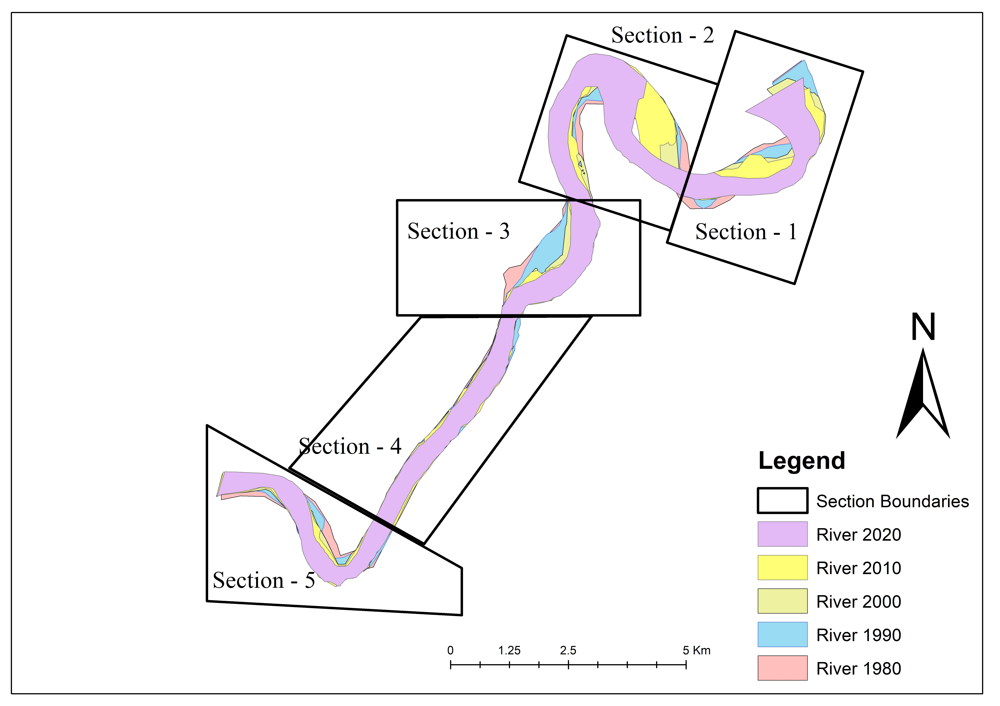
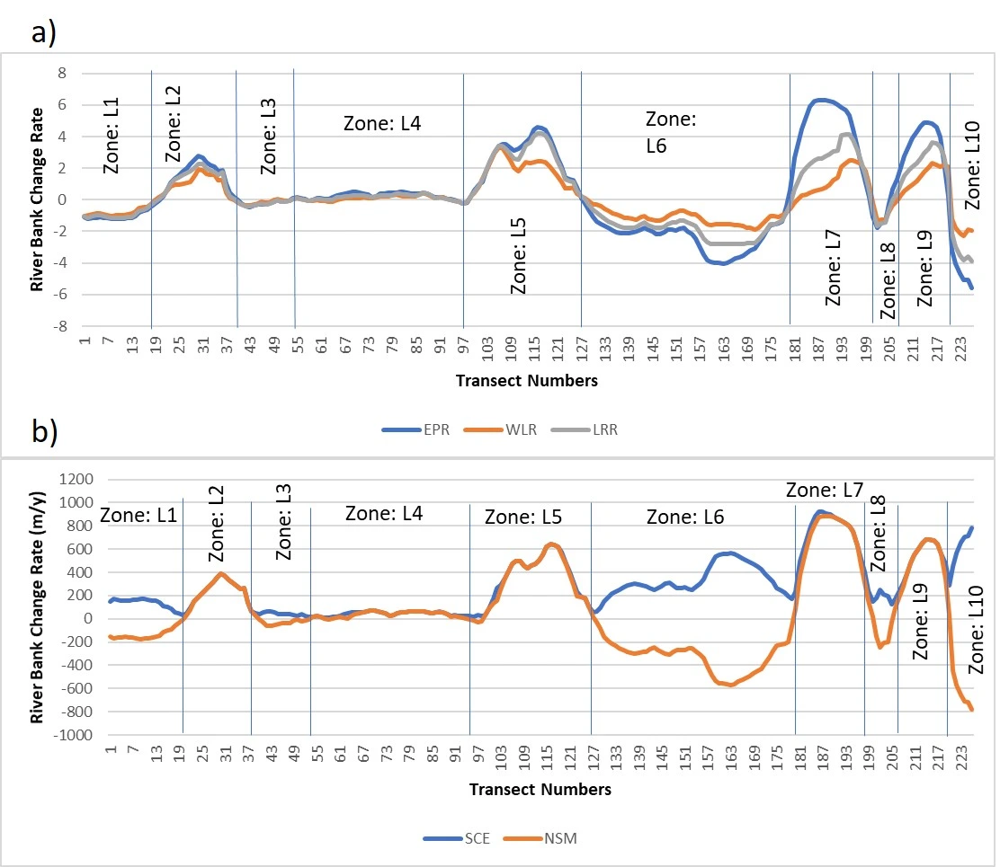
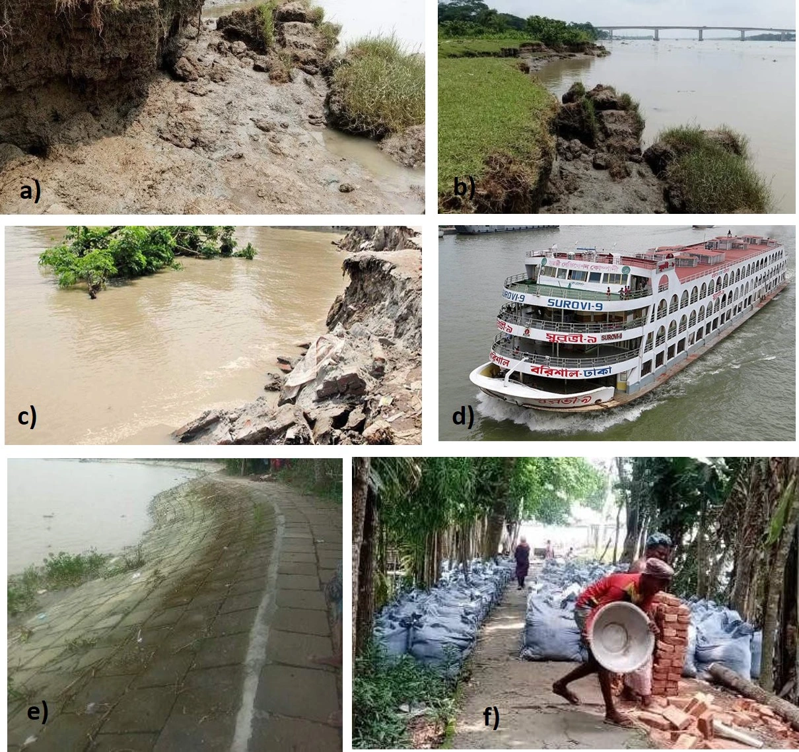

Introduction
Rivers continually reshape their channels through erosion and sediment deposition. In Bangladesh’s low-lying delta, these changes can remove land, disrupt livelihoods, and threaten settlements and infrastructure.
The Kirtankhola River is a vital waterway in southern Bangladesh, supporting river traffic, agriculture, and the growing city of Barishal. Its banks have experienced erosion and channel shifts, with different patterns on the left and right banks. This project combines multi-date satellite imagery, GIS, and field evidence to map bankline change and measure erosion and accretion from 1980 to 2023.
Study Area
The study covers an approximately 25 km meandering reach of the Kirtankhola River, from Charmonai to Rayapur near Barishal in southern Bangladesh. The reach lies within the Bengal Basin, over soft Holocene delta deposits of sand, silt, and clay.
The channel averages about 0.5 km wide, narrowing to around 300 m near Barishal Launch Ghat and widening to roughly 800 m near Char Upen. Monsoon flows, seasonal flooding, and tidal movements shape the river environment.

Significance
Measuring where and how quickly the banks move helps identify persistent erosion and accretion zones along a river that is important to Barishal’s transport, agriculture, and settlements. Combining satellite-derived change rates with field and geotechnical observations connects mapped hotspots with conditions on the ground.
The resulting baseline can support river-management discussions, risk-aware land-use planning, and future monitoring. The analysis also documents how planform geometry and bank materials relate to observed instability.
Objectives
- Map Kirtankhola River banklines for 1980, 1990, 2000, 2010, and 2023.
- Quantify erosion and accretion areas and calculate DSAS bank-change statistics.
- Assess changes in sinuosity and channel width across the study reach.
- Compare mapped hotspots with field evidence, bank materials, and community experience.
Methods & Materials
Multi-temporal Landsat imagery was collected for five dates from 1980 to 2023, using January scenes with less than 10% cloud cover to reduce seasonal water-level variation. Water-level, rainfall, and mean tidal-discharge data were gathered from the Bangladesh Water Development Board.
Satellite scenes and observed water levels
Five January Landsat scenes cover the 1980–2023 study period. The 2023 image was acquired at 10:25 GMT+6 with a reported water level of 0.49 m MSL.
| Date | Sensor | Resolution | Water level |
|---|---|---|---|
| 15 Jan 1980 | Landsat MSS | 60 m | −0.32 m |
| 10 Jan 2023 | Landsat OLI/TIRS | 30 m | 0.49 m |
Geospatial workflow
Image preparation and bankline extraction
The 2023 Landsat image served as the reference for registering earlier images to the UTM coordinate system using ground control points. The reported registration RMSE was below 0.5 pixels. Images were resampled to 30 m using nearest-neighbor resampling in ERDAS Imagine 14. NDVI supported water–land discrimination; banklines were then digitized as vector polylines in ArcGIS 10.8 at a fixed scale of 1:15,000.
Erosion, accretion, and bank-change rates
Successive banklines were overlaid to delineate erosion and accretion polygons. DSAS 5.1 in ArcGIS was used with a baseline approximately 500 m inland and perpendicular transects at 100 m intervals. The analysis calculated End Point Rate (EPR), Linear Regression Rate (LRR), Weighted Linear Regression (WLR), Net Shoreline Movement (NSM), and Shoreline Change Envelope (SCE).
Planform and field assessment
Sinuosity was calculated as channel length divided by valley length for five dates and five sinuosity sections. Channel width was measured along 80 manually placed transects at 300 m intervals. Geotechnical work included eight hand-augered boreholes, 46 disturbed samples, and six undisturbed block samples collected at about 3 ft depth. Field surveys checked bank conditions and mapped hotspots; semi-structured interviews were conducted with 70 purposively selected households affected by erosion.
Results & Visualizations
Erosion and accretion by period
The supplied table reports 739.77 ha of total erosion and 569.67 ha of total accretion across 1980–2023.
| Period | Erosion total | Accretion total |
|---|---|---|
| 1980–1990 | 209.91 ha | 141.74 ha |
| 2010–2023 | 361.40 ha | 244.12 ha |
| Total, 1980–2023 | 739.77 ha | 569.67 ha |
Right-bank DSAS zone statistics
Selected zones illustrate the range of reported bank-change rates. Open the table for all reported statistics across the ten right-bank zones.
| Zone | Reported class | Mean EPR | Transects |
|---|---|---|---|
| R6 | Low Erosion | −2.17 m/y | 54 |
| R7 | Low Accretion | 4.78 m/y | 19 |
| R10 | Low Erosion | −4.62 m/y | 6 |
Multi-decadal erosion and accretion
Erosion predominated over accretion across the study period, with a reported net land loss of 739.77 ha and gross accretion gain of 569.67 ha. The left bank was more erosion-dominant, while the right bank showed more pronounced accretion. The river’s sinuosity index increased from 1.59 in 1980 to 1.78 in 2023.




Channel width, field evidence, and community impact
Mean river width remained relatively stable over the multi-decadal period, although individual reaches alternated between narrowing and widening. Field checks found that DSAS hotspots aligned with tension cracks, block failures, and cantilever collapses, especially near outer bends. Household surveys described losses of agricultural land, homestead displacement, and threats to infrastructure and livelihoods.

Discussion
Processes shaping bank dynamics
The findings point to interacting controls from hydrology, channel geometry, and bank materials. Higher sinuosity concentrates flow against outer banks and can intensify local migration and scour. Seasonal discharge and water-level fluctuations, including rapid drawdown, may further reduce bank stability.
Geotechnical vulnerability and failure
Laboratory observations indicate that cohesion, moisture, and particle-size variation influence bank resistance. Saturated fine-grained materials may soften and fail through tension cracking, cantilever collapse, or rotational sliding. The field observations provide context for interpreting the remotely mapped hotspots.
Conclusion
The Landsat and DSAS assessment documents substantial Kirtankhola River planform change between 1980 and 2023, including a reported net land loss and rising sinuosity. Geotechnical and field observations connect vulnerable bank materials and hydrodynamic processes with active erosion hotspots, while household accounts show the consequences for local livelihoods and infrastructure.
The mapped results provide a baseline for river-basin management and future monitoring of this reach.
Recommendations
- Assess site-specific bioengineering and flexible bank-protection measures at high-risk outer bends, guided by geotechnical conditions.
- Use erosion and accretion corridors to inform setback zones and land-use planning near vulnerable banks.
- Continue satellite-based monitoring and complement it with periodic field and bathymetric surveys.
- Share timely risk information with riverside communities and local authorities.
References
- Thieler, E. R., Himmelstoss, E. A., Zichichi, J. L., & Ergul, A. (2009). Digital Shoreline Analysis System (DSAS) version 4.0—An ArcGIS extension for calculating shoreline change. U.S. Geological Survey Open-File Report 2008-1278.
- Himmelstoss, E. A., Henderson, R. E., Kratzmann, M. G., & Thieler, E. R. (2018). Digital Shoreline Analysis System (DSAS) version 5.0 user guide. U.S. Geological Survey.
- Islam, M. S., Hossain, M., & Rahman, M. M. (2020). Assessing riverbank erosion, accretion, and channel shifting of major rivers in Bangladesh using remote sensing and GIS techniques. Journal of Geographic Information System, 12(5), 450–468.
- Alam, M. F., & Hossain, M. (2021). Spatio-temporal analysis of planform dynamics and bank migration of distributary rivers in the Ganges-Brahmaputra Delta. Environmental Earth Sciences, 80(12), 415.
- Hung, N. M., & Larson, M. (2013). Evaluating shoreline change methods using the Digital Shoreline Analysis System: A case study. Journal of Coastal Research, 29(4), 899–911.
- Dar, M. A., Rai, S. P., & Ahmed, P. (2014). Geomorphic and geotechnical assessment of riverbank erosion along alluvial channels. Geomorphology, 228, 260–274.